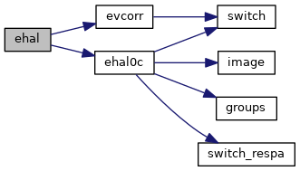
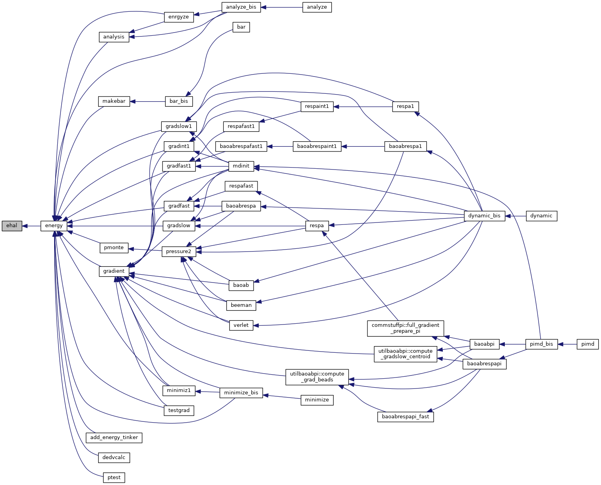
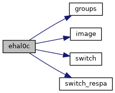
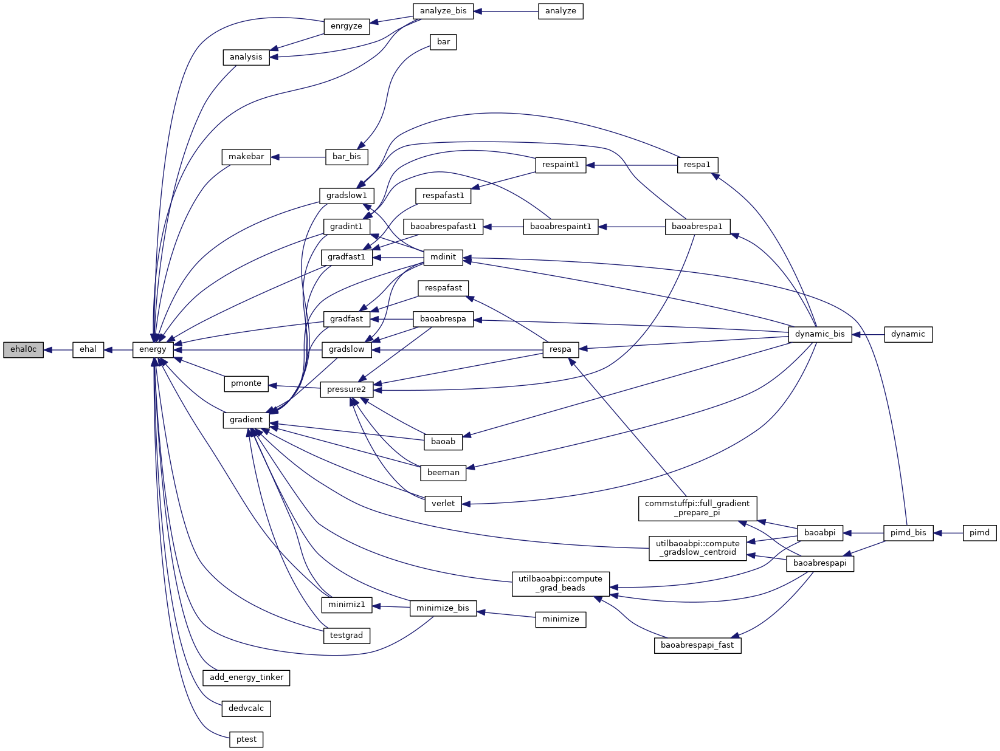

|
Tinker-HP v1.3
|
|
Tinker-HP v1.3
|
Go to the source code of this file.
Functions/Subroutines | |
| subroutine | ehal |
| calculates the buffered 14-7 van der Waals energy and partitions the energy among the atoms More... | |
| subroutine | ehal0c |
| "ehal0c" calculates the buffered 14-7 van der Waals energy using a pairwise neighbor list More... | |
| subroutine ehal | ( | ) |
calculates the buffered 14-7 van der Waals energy and partitions the energy among the atoms
| no | params |
Definition at line 21 of file ehal.f90.
References ehal0c(), and evcorr().
Referenced by energy().


| subroutine ehal0c | ( | ) |
"ehal0c" calculates the buffered 14-7 van der Waals energy using a pairwise neighbor list
| no | params |
Definition at line 66 of file ehal.f90.
References groups(), image(), switch(), and switch_respa().
Referenced by ehal().


 1.8.5
1.8.5